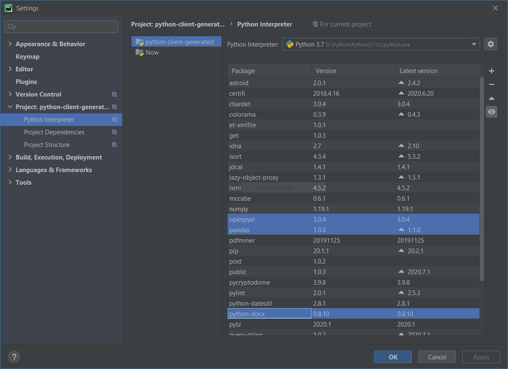

11. Extracting Word Document Information using Python
-
-
Cover Page
11. Extracting Word Document Information using Python

-
1. Extracting information from Word Document
Requirment :
To create Boardwalk Repository we need to extract information from various types of files.
Microsoft Office Documents such as Microsoft Word, Microsoft Powerpoint and Microsoft Excel files are the most commonly used documents by the users.
Acrobat PDF files are also used in ReadOnly mode to share the information by the users.
-
2. Python Support for Data Extraction
Every document saves information in a specific format and needs the related libraries to read that docucement for extracting the information.
The information extracted from the file includes the Structure of Document i.e. the Metadata (you can call it Data of Information) and the Information itself.
Python support some libraries like Python-docx to read the Microsoft Word Documents.
python-docx
Release v0.8.10 (Installation)
python-docx is a Python library for creating and updating Microsoft Word (.docx) files. Click here
Check this URL on how to install python-docx library

-
3. python-docx API
Using python-docx library enable user to extract the structure information of Word Document.
A Word Document contains Text, Images, Tables, Paragraphs, Words and Sentences.
Following are the objects that are included in python-docx library to extract the information from Word Document.
-
4. Form Interface
Following image display the form Interface for Extraction of Information from the Word Document.
The functionality of Capture Word Document Form Interface is as follows :
It allows user to select a Word Document from the local drive.
It displays the definitions of the Object, Properties and Property Description defined by python-docx library. This information is read from the Framework Setting Excel document i.e. "FrameworkForWordDocument.xlsx".
It displays the Object Properties of the selected Word Docuement in Read-only mode.
It displays the Text inside the selected Word Document.
It displays the list of Paragraphs in selected Word Document.
It displays the Text in each selected Paragraph.
It displays the list of Runs in each selected Paragraph.
It displays the the Details of each selected Run of selected Paragraph.
It displays the Raw data extracted from the selected Word Document in JSON format.
It saves the Run-wise each Paragraph Text in Word Document in structured CVS file.
It displays the Run-wise Paragraph Text in Word Document in JSON format.
-
5. Python Libraries Used
The required information to be extracted from the Word Doucument is saved in the Framework created in Microsoft Excel.
To read this Framework Settings from Excel file, openpyxl python library is used.
The openpyxl library is downloaded from here
To read the Word document and extract related Objects defined in Framework Settings, python-docx library is used.
The python-docx library is downloaded from here
To read Tabuler data from Office Document, python pandas library is used.
Following image shows the downloaded python libraries in Pycharm Settings window:

-
6. Framework Settings
The information to be extracted from the Word Document is defined in an Excel File, this definition is called as Framework Settings.
The name of Framework setting Excel Document is "FrameworkForWordDocument.xlsx" and it is saved in same folder where python programm is running.
Following image shows the defined Framework Setting :
The Framework Settings for extracting the Word Document information contains following elements.
a. Headings : The Heading is the object defined by python-docx Api.
b. Elements : The property name of the object defined by python-docx Api.
c. Format : The data type and size of the object property defined by python-docx Api. For example, datetime, string, boolean, numeric.
d. Method : Details of the method defined by python-docx Api. Methods are not stored in Framework Settings.
e. Notes : Description of object properties defined by python-docx Api.
f. PythonCall : Python method call to extract the object properties from the selected Word Document.
-
7. Python Programs
Following are the Python programs developed to extract Word Document Information:
1. mainModule.py : This file contails the main() function i.e. the starting fucntion of the program.
2. placeGeometry.py : This file contains the Form Interace design.
3. frameworkSettings.py : This file contains the functionality related to reading the Framework Setting Excel file and displaying the Object Properties related settings.
4. WordDocFile.py : This file contains the methods to Open the selected Word Document and Reading the selected Object properties of selected Word Document.
-
8. Downloads and Links
1. pythonmodules.7z : Zip file containing python modules to extract Word Document and Framework Settings in Excel Document.
(mainModule.py, placeGeometry.py, frameworkSettings.py, WordDocFile.py, FrameworkForWordDocument.xlsx)
2. python-docx
Release v0.8.10 (Installation)
python-docx is a Python library for creating and updating Microsoft Word (.docx) files.
Setup Command : pip install python-docx
3. openpyxl
Version : openpyxl 3.0.4
Setup command : pip install openpyxl
4. pandas
Version : pandas 1.0.5
Setup command : pip install pandas
5. How to install python-docx library
6. Framework setting Excel Document : FrameworkForWordDocument.xlsx